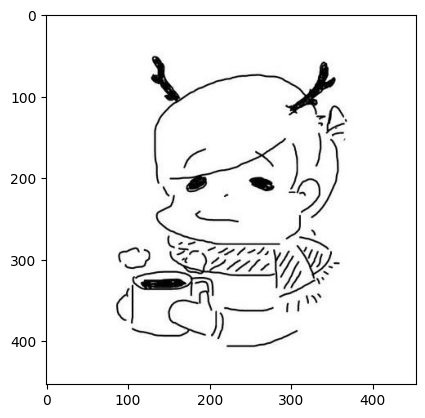
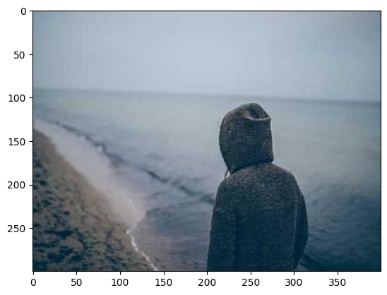

Common Utilities
When working on computer vision tasks, developers often find themselves spending a considerable amount of time writing code for debugging or comparisons. Tasks such as displaying an image, downloading an image with a specific size, combining images or videos, extracting frames from videos, or displaying a folder tree of working directories can be time-consuming.
Kano is a utilities library designed to simplify these tasks with just a few lines of code. It offers functions to handle common tasks, which can be categorized into image tasks, video tasks, and file tasks. Here are some examples:
Test demo with Google Colab here: 
Image tasks
Download images from urls and show
The show_image code is compatible when running with both .py and .ipynb files.
from kano.image_utils import download_image, show_image
image = download_image("https://avatars.githubusercontent.com/u/77763935?v=4", "image.jpg")
# using numpy array
show_image(image)
# using file path
show_image("image.jpg")
Result:

Download image with desired size
from kano.image_utils import get_random_image
desired_image = get_random_image(width=400, height=300, save_path="random_image.jpg")
# using numpy array
show_image(desired_image)
# using file path
show_image("random_image.jpg")
Result:

Combine images
The input images must be numpy arrays.
from kano.image_utils import concatenate_images
image_list = [
[image, desired_image],
[desired_image]
]
concatenated_image = concatenate_images(image_list)
show_image(concatenated_image)
Result:

Video tasks
Download youtube videos from urls
This function used pytube library to download youtube video.
from kano.video_utils import download_youtube_video
download_youtube_video("https://youtu.be/wc-wPvawmj8", "video_1.mp4")
download_youtube_video("https://youtube.com/shorts/TJVXPkvSPck", "video_2.mp4")
download_youtube_video("https://youtube.com/shorts/-QCs2GSLLUM", "video_3.mp4")
Extract frames from a video
Extract frames with a seconds_interval between each pair of consecutive frames, placed one after the other
from kano.video_utils import extract_frames
extract_frames("video_1.mp4", "target_folder", seconds_interval=1)
Combine videos
from kano.video_utils import concatenate_videos
video_paths = [
["video_1.mp4", "video_2.mp4"],
["video_3.mp4"]
]
titles = [
["Video 1", "Video 2"],
["Video 3"],
]
output_video_path = "output_video.mp4"
concatenate_videos(video_paths, titles, output_video_path)
A frame of concatenated video:

File tasks
List files, folders from a path
from kano.file_utils import list_files, list_folders
print("List files paths :", list_files("target_folder"))
print("List folders paths: ", list_folders("/content"))
Result:
List files paths : ['/content/target_folder/frame_000.jpg', '/content/target_folder/frame_030.jpg', '/content/target_folder/frame_060.jpg', '/content/target_folder/frame_090.jpg', '/content/target_folder/frame_120.jpg']
List folders paths: ['/content/.config', '/content/output_video_frames', '/content/sample_data', '/content/target_folder']
Print the folder tree
from kano.file_utils import print_foldertree
print_foldertree("/content", max_level=1, verbose=True)
Result:
/content (6 files + 4 folders)
|
|-- image.jpg (32.70 KB)
|-- output_video.mp4 (32.41 KB)
|-- random_image.jpg (19.67 KB)
|-- video_1.mp4 (67.22 KB)
|-- video_2.mp4 (261.71 KB)
|-- video_3.mp4 (265.52 KB)
|
|-- .config (7 files + 2 folders)
|
|-- output_video_frames (5 files + 0 folders)
|
|-- sample_data (6 files + 0 folders)
|
|-- target_folder (5 files + 0 folders)
Create, remove a folder
Create a folder with its parent folders and remove a folder with its children items
from kano.file_utils import create_folder, remove_folder
create_folder("new_folder")
print_foldertree("/content")
print("\n")
remove_folder("new_folder")
print_foldertree("/content")
Result:
/content (6 files + 5 folders)
|
|-- image.jpg (32.70 KB)
|-- output_video.mp4 (32.41 KB)
|-- random_image.jpg (19.67 KB)
|-- video_1.mp4 (67.22 KB)
|-- video_2.mp4 (261.71 KB)
|-- video_3.mp4 (265.52 KB)
|
|-- .config (7 files + 2 folders)
|
|-- new_folder (0 files + 0 folders)
|
|-- output_video_frames (5 files + 0 folders)
|
|-- sample_data (6 files + 0 folders)
|
|-- target_folder (5 files + 0 folders)
Folder 'new_folder' and its contents removed successfully.
/content (6 files + 4 folders)
|
|-- image.jpg (32.70 KB)
|-- output_video.mp4 (32.41 KB)
|-- random_image.jpg (19.67 KB)
|-- video_1.mp4 (67.22 KB)
|-- video_2.mp4 (261.71 KB)
|-- video_3.mp4 (265.52 KB)
|
|-- .config (7 files + 2 folders)
|
|-- output_video_frames (5 files + 0 folders)
|
|-- sample_data (6 files + 0 folders)
|
|-- target_folder (5 files + 0 folders)